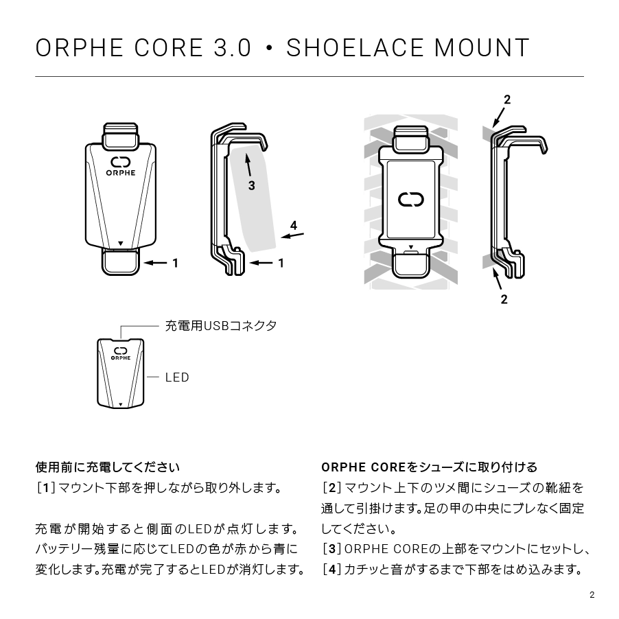
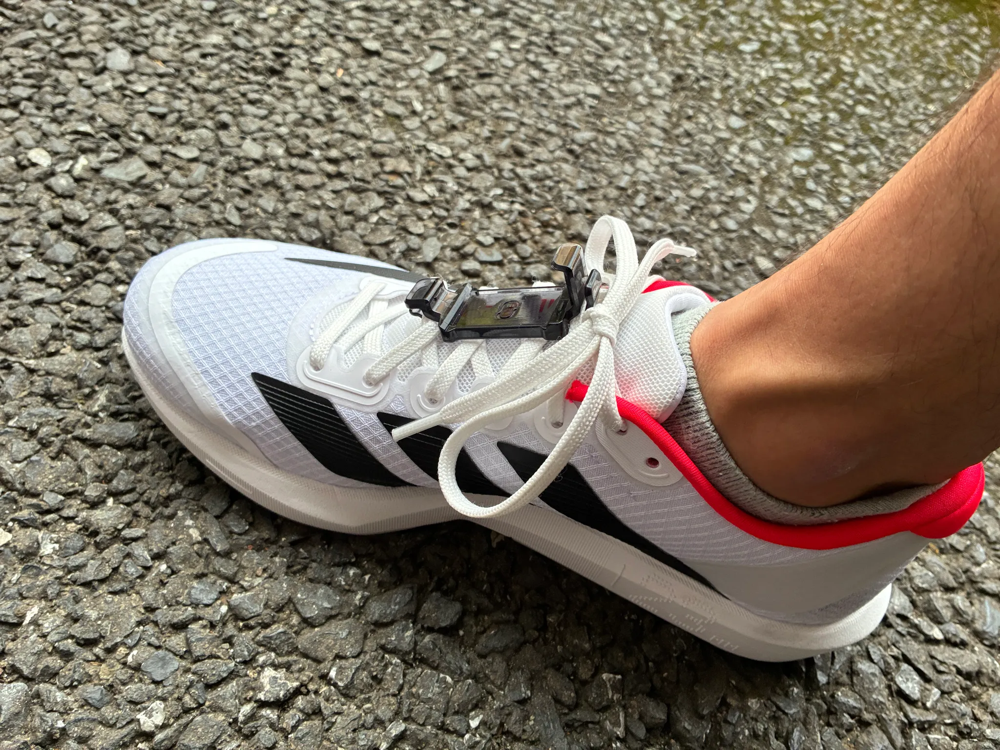

Back to ORPHE-CORE.js ORPHE-CORE.jsに戻る
Shoelace mount setup シューレースマウントの使い方
Attach ORPHE CORE to your own shoes with laces 靴ひものある手持ちのシューズにORPHE COREを取り付ける
This guide explains how to attach ORPHE CORE 2.0 or 3.0 to your own shoes with laces using the shoelace mount available from the ORPHE Official Store. ORPHE Official Storeで購入できるシューレースマウントを使って、ORPHE CORE 2.0 / 3.0を靴ひものある手持ちのシューズに取り付ける手順です。


Mounting steps 取り付け手順
-
Check the sensor direction センサーの前後を確認
Set ORPHE CORE so the triangle mark on the flat surface points toward the toe. ORPHE COREの平らな面に印字されている三角マークが、つま先側を向くようにします。
-
Snap it into the mount マウントにセット
Press ORPHE CORE firmly into the groove until it clicks into place. シューレースマウントの溝に、カチッと音がするまでしっかり押し込みます。
-
Thread it through the laces 靴ひもに通す
Pass the left and right laces through the holes on the back of the mount near the instep, then adjust it so it does not rotate sideways. 足の甲に近い部分で左右の靴ひもをマウント裏側の穴に通し、足の甲の上で横向きにならないように位置を調整します。
-
Confirm left and right 左右の向きを確認
Make sure the app setting and the actual sensor side match. Reversed left/right settings can affect measurement accuracy. アプリの設定と実際のセンサーが右足用・左足用で合っているか確認してください。左右が逆になると正確に計測できません。
For charging, app connection, and the full running measurement flow, see the official guide video and ORPHE Support page. 充電、アプリ連携、ランニング計測の流れまで確認したい場合は、公式ガイド動画とORPHE Supportページも参照してください。